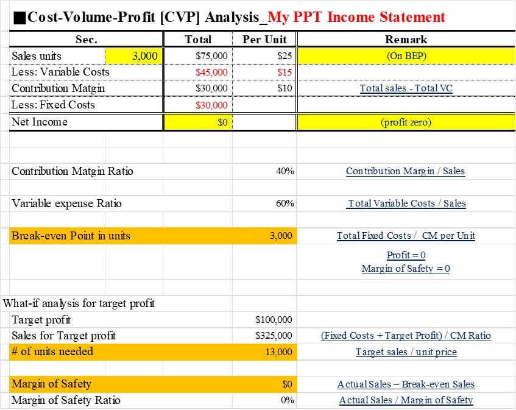

- Break-Even Point Analysis
- Margin of Safety Analysis
- Target costing
- Formula and Graph
- Calculations by Excel
- Limitations of Cost Volume Profit Analysis
3. Target costing
CVP _ Analysis by Excel #3

How to improve MOS
- Increasing the selling price.
- Increasing the sales volume by increasing the capacity.
- By improving the contribution margin through reducing the variable cost.
- By lowering BEP through reduction of fixed cost.
- Stop production of unprofitable products and concentrate on only the profitable products.

by David Rino KO [MBA of Angeles University Foundation]